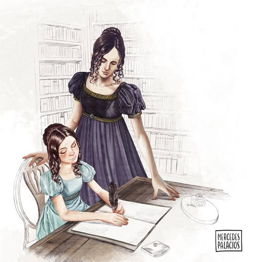
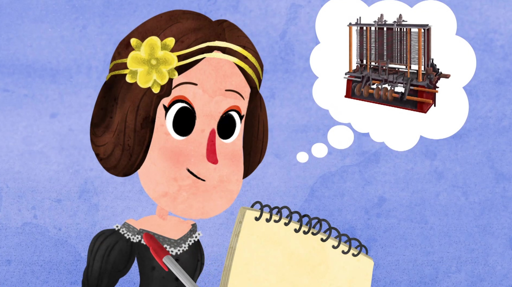
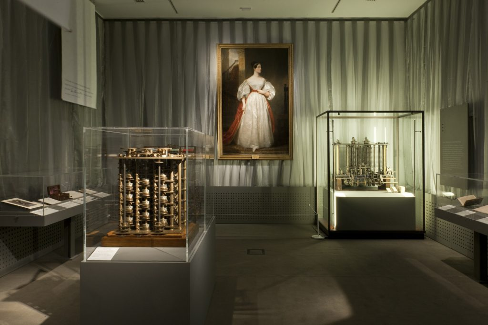

Augusta Ada King, condesa de Lovelace, nació el 10 de diciembre de 1815, pero,
apenas un mes después de venir al mundo, y debido a desavenencias conyugales,
su madre abandonó el hogar familiar mientras Lord Byron dormía, llevándose con ella
a su hija recién nacida.
Su madre se esforzó en darle una esmerada y estricta educación, que incluía música,
francés y matemáticas. Asimismo, quiso que su hija tuviera una formación científica,
y para ello contrató a la prestigiosa matemática y astrónoma escocesa Mary Somerville.
Para estimular aún más el interés de Ada por la ciencia y la tecnología, madre e hija
viajaron por las regiones más industrializadas de Inglaterra, donde la muchacha pudo admirar
las máquinas más novedosas como el "telar de Jacquard", un telar mecánico inventado por Joseph
Marie Jacquard y que ya en aquella época utilizaba tarjetas perforadas para funcionar.
Su elevado estatus social le permitió relacionarse con prestigiosos científicos como Andrew Crosse,
David Brewster, Charles Wheatstone, Michael Faraday y con el novelista Charles Dickens.
Al cumplir los 18 años, y como cualquier otra joven aristócrata de su época,
Ada empezó a asistir a fiestas de la alta sociedad y en una de ellas, organizada
por su tutora Mary Somerville, conoció al matemático Charles Babbage, que había diseñado
una calculadora mecánica capaz de calcular tablas de funciones numéricas por el método de diferencias.
También diseñó, aunque nunca la llegó a construir, una máquina analítica para ejecutar programas
de tabulación o computación. Por estos inventos, Babbage es considerado uno de los pioneros en concebir
la idea de lo que hoy podríamos considerar una computadora.
El invento de Babbage entusiasmó a Ada, y lo más importante, la joven pensó que aquel invento
demostraba que un día no muy lejano las máquinas harían posible cambiar la vida de las personas.
Biografía
Obra
 En 1842, Ada realizó su único trabajo profesional para la revista Scientific Memoirs,
que le encargó la traducción de un artículo escrito en francés por el ingeniero militar
italiano Luigi Menabrea en el que se describía la máquina analítica de Babbage.
En 1842, Ada realizó su único trabajo profesional para la revista Scientific Memoirs,
que le encargó la traducción de un artículo escrito en francés por el ingeniero militar
italiano Luigi Menabrea en el que se describía la máquina analítica de Babbage.
Ada publicó el artículo con abundantes notas de su cosecha, en las cuales aportaba sus propias
teorías acerca del funcionamiento de la máquina de Babbage. Las notas, firmadas tan sólo con las
iniciales AAL para ocultar su verdadera identidad, no serían publicadas con su verdadero nombre hasta 1953.
Al final, esas extensísimas notas acabaron siendo más famosas que la propia traducción del artículo.
Pero, ¿qué contenían las notas de Ada para que acabasen siendo más importantes que el propio texto?
La imaginación y la capacidad de Ada para ver más allá de la realidad inmediata la hicieron capaz de
desarrollar varios conceptos que en la actualidad podrían considerarse visionarios.
El más célebre es el que se refiere al funcionamiento de lo que hoy se conoce como algoritmo informático.
Ada tomó como ejemplo los números de Bernoulli, que consisten en una serie infinita de cifras que juegan
un papel importante para describir, por medio de un diagrama, las operaciones que la máquina de Babbage
tendría que realizar para poder calcularlas.
Legado

fue Ada Lovelace quien introdujo aquel algoritmo en la máquina de Babbage, esbozando un concepto informático que hoy conocemos como "bucle", un grupo de instrucciones que se ejecutan varias veces, o "subrutina", parte de un programa que puede ser requerido en cualquier momento.
De hecho, aunque no se puede afirmar categóricamente que Ada Lovelacedesarrollara el primer programa informático de la historia, a diferencia de Babbage sí que fue capaz de ver sus consecuencias prácticas.
Por ejemplo, de Ada Lovelace fue la idea de una máquina que pudiera programarse y reprogramarse para que ejecutara diversas funciones y no se limitase simplemente al cálculo, sino que fuera capaz de llevar a cabo cualquier tarea que se pudiera expresar mediante símbolos.
Muerte prematura

A pesar del intento de Babbage por convencer al gobierno británico para que financiara la construcción de su máquina y dar un salto tecnológico que sin duda hubiera cambiado el siglo XIX, el matemático murió en la pobreza después de dilapidar su fortuna.
Tras el rechazo profesional de Babbage, Ada Lovelace ya no volvió a trabajar, y atormentada por su enfermedad y su adicción a los opiáceos buscó refugio en el juego y en los brazos de numerosos amantes, lo que le costó gran parte de su fortuna y su matrimonio.
Ada murió el 27 de noviembre de 1852 a causa de las sangrías provocadas por los médicos de la época en un intento de curar el cáncer de útero que padecía. Tenía 36 años, la misma edad que Byron al morir, siendo su último deseo ser enterrada junto al padre al que nunca conoció.
El algoritmo de Ada Lovelace para calcular los números de Bernoulli nunca llegó a implementarse y nunca pudo ser probado, puesto que la máquina analítica de Babbage nunca se construyó.
Tuvieron que pasar casi cien años hasta que un ingeniero estadounidense y pionero en el campo de la informática, llamado Howard Aiken, diseñara un ordenador electromagnético, muy estrechamente ligado con el trabajo de Babbage sobre la máquina analítica.